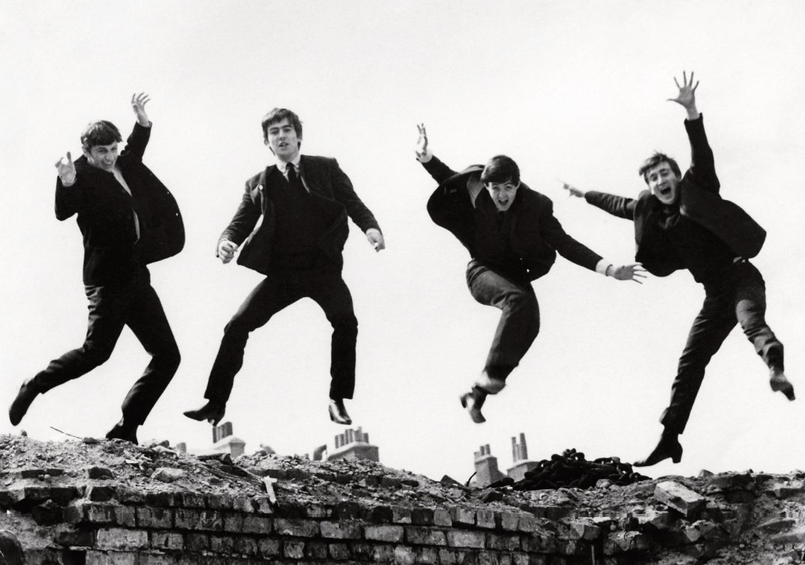

Автор проекта: Лазарева Элина Николаевна | Группа: ЭФЦ421-9
Главная | Информация | История | Дискография | Фильмография | Ссылки | Магазин | Контакты
История легендарного коллектива началась в Ливерпуле в марте 1957 года, когда школьник Джон Леннон создал скиффл-группу под названием The Quarrymen. Вскоре к нему присоединился талантливый гитарист Пол Маккартни, а в 1958 году в состав вошел виртуозный гитарист Джордж Харрисон. Название группы несколько раз менялось (Johnny and the Moondogs, The Silver Beetles), пока в августе 1960 года окончательно не трансформировалось в The Beatles.
Важнейшим этапом становления музыкантов стали выступления в клубах Гамбурга (ФРГ). Выступая по несколько часов подряд каждый день в барах Reeperbahn, ансамбль оттачивал свое мастерство, сыгранность и невероятную сценическую харизму. Именно в Гамбурге к квартету присоединился барабанщик Ринго Старр (вместо Пита Беста), сформировав классический состав группы.

С выходом сингла «Please Please Me» и альбома в Великобритании началась эпоха «битломании». В 1964 году музыканты покорили США, выступив в телешоу Эда Салливана перед рекордной аудиторией в 73 миллиона человек. Концерты сопровождались истерией фанатов, из-за чего в 1966 году после гастролей в Сан-Франциско группа приняла решение прекратить концертную деятельность и полностью сосредоточиться на студийной работе.
Последние годы существования квартета ознаменовались созданием концептуальных шедевров: Sgt. Pepper's Lonely Hearts Club Band (1967), Abbey Road (1969) и других альбомов, изменивших стандарты звукозаписи. Из-за творческих разногласий и внутренних конфликтов в апреле 1970 года Пол Маккартни объявил об официальном выходе из группы, завершив историю величайшего ансамбля XX века.
© 2026 Лазарева Элина Николаевна (Группа ЭФЦ421-9). Все права защищены.